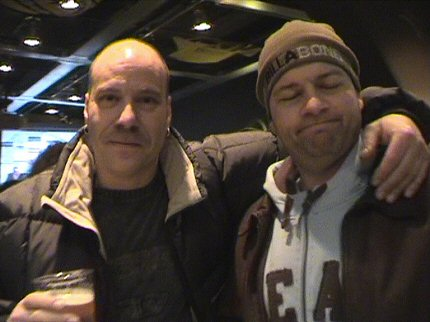

|
Roda JC - N.E.C. (0-1) 9 december 2005
|
In de diverse standjes werden kerstmutsjes verkocht.
IJdele hoop, Vicelich speelde in de verdediging.
Toch nog ruim 100 NEC-supporters op deze vrijdagavond.
In de eerste helft valt er voetballend weinig te genieten. NEC lijkt voor een
punt te komen en Roda dringt niet echt aan.
De gevaarlijkste momenten vormen het handjevol hoekschoppen en vrije
trappen zoals hier voor NEC.
Of zoals hier voor Roda waar uit een reboundsituatie na een vrije trap net
door de excellerende Babos gered kan worden.
Pech... Oper schiet op de paal.
Bodnar is voortdurend de vrije man. De Hongaar weet weinig met die luxe
aan te vangen maar is hier heel dicht bij een treffer, maar ja....Babos!
De 40 plussers van Z16 en de eerste vijftigers komen er aan! Time flies....
Na de 0-0 ruststand toont Izzie zijn nieuwste tattoos. Wordt vervolgd!
De kerst-ster torent boven het PLS.
De tweede helft wordt gedomineerd door Roda. Toch gaat het mis. Hier
verspeelt Lachambre de bal. Tininho schuift de bal naar Boutahar.
En die scoort 0-1, (72').
Roda perst er een wanhopig slotoffensief uit. Hier is verdediger Vicelich
zelfs voorin te vinden maar de verdediging van NEC is te solide.
De inbreng van Cristiano voor Bodor alsmede de 3 minuten extra tijd kunnen
Roda niet redden. NEC wint sober en slim.

Gedeelde smart is halve smart....
Gezelligheid in de Kickoff.
Persoonlijk uitgeleid door de hoofdsteward.
© Koempels Pleasure Dome
|